文章一：SNrram: An Efficient Sparse Neural Network Computation Architecture Based on Resistive Random-Access Memory
主要思想是通过RRAM设计了一个有效率的稀疏神经网络的计算结构，通过优化权重和激活值中的稀疏值来消除非0值运算，从而提高资源利用率，减少能耗
当前实现的state-of-the-art的RRAM神经网络遇到的挑战
- 使用耦合的crossbar结构，很难跳过0值计算
- 并行计算需要额外的周期解码数据，这样会导致功耗性能降低
作者提出的解决方法
- 通过分割和重组把稀疏矩阵变成dense矩阵，提高资源利用率，这样可以修剪掉0值运算
- 使用RRAM的计算和存储能力来解码和存储数据，避免并行运算电路
权重的稀疏
假设输出通道C，输出通道M，filters大小kxk
那么所有的权重参数一共是CxkxkxM, 如果把这些参数分成C个子矩阵，那么每个矩阵是kxkxM个权重
文章说：“如果对应的某个输入通道的输出通道没修剪掉的话，我们可以在子矩阵中得到整列的空值”
as long as an output channel is pruned in any input channel, we can get a whole empty column in a sub-matrix.
PS:不是很理解为什么
现在假设C=2,k=2,M=4,原始矩阵有8x4个权重值
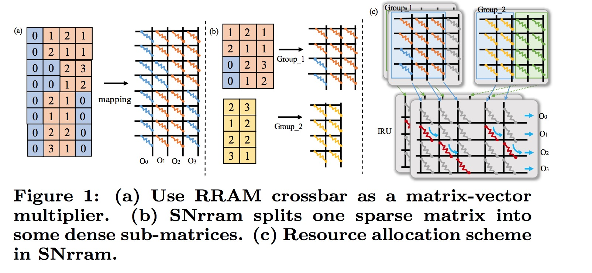
- 把他分成2个子矩阵，并去掉0值（为了保证矩阵的完整性，部分0没有去掉）
- 把形状相同的矩阵放入一个crossbar的不同部分
- 根据crossbar的形状把他们进行分组
- 使用并行输出通道提高性能
真实情况下宽往往比高大很多，所以为了不浪费资源，可以把不平衡（长宽大小很不一致）的矩阵合并成接近正方形的矩阵
作者提出了一种indexing register unit(IRU)来累加部分结果和解析稀疏格式
灰色表示0或关掉，红色表示非0或打开
如果同一行不同列的cell都是红色，那么输出相关计算结果
激活值的稀疏
两种方式：
- fixed sparsity，就是在输入数据里补0导致计算出的激活值有0
- random sparity，就是在计算过程中动态的产生了0
- 对权值不共享的网络（为什么这么说，CNN不是本身就是有权值共享的特性吗，不理解），优化方法和权值稀疏的优化方法类似
- 对权值共享的网络,作者提出了一种Sparsity Transfer Algorithm(STA)
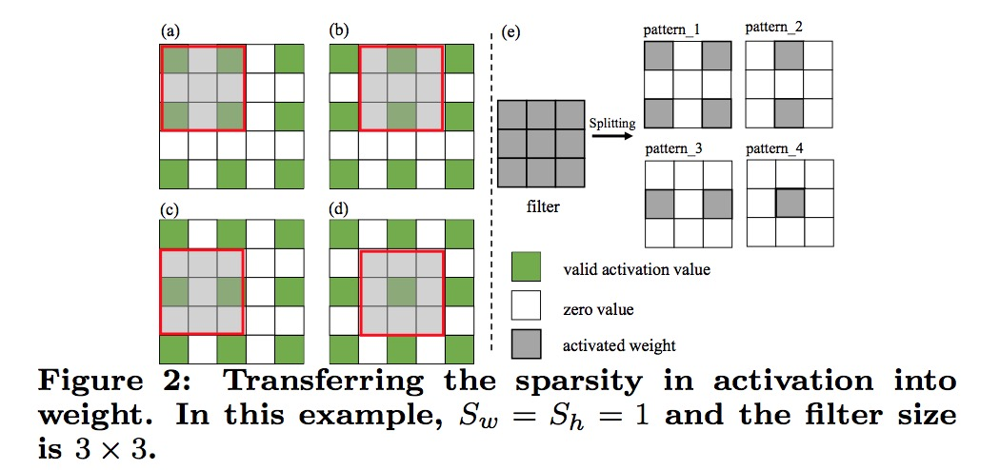
这个算法我看的不是很懂
我感觉作者的意思是在计算卷积的过程中，由于算出的激活值（输入值）为0的地方根本不需要进行计算，这些值对应的权重也可以（在filter中）修剪掉，窗口每次滑动的时候对应的filter的模式（有效权重的个数和位置）不同。我们可以把这些模式分出来，从而在计算过程中直接拿这些模式计算，可以修剪掉很多0值的操作。
Architecture
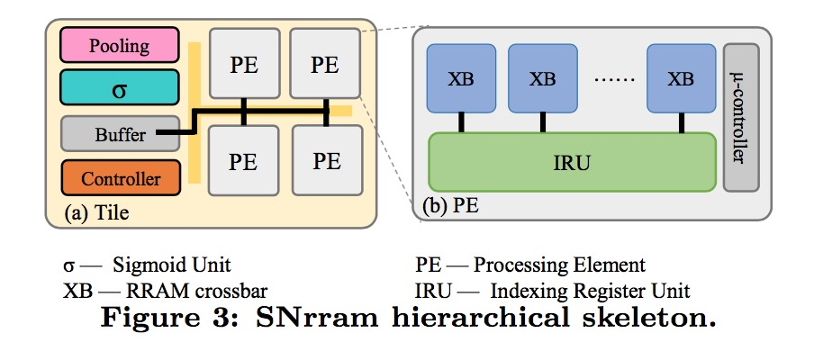
SNrram由很多tiles构成，每个tiles里面有很多Process elements(PE)，PE里面有crossbar矩阵，用于计算矩阵乘法
正，负权重分开放置
Evaluation
benchmark
- MLP,Lenet(数据集MNIST)
- VGG(数据集ImageNet)
- DCGAN(数据集celebA)
横向比较：
- PRIME: state-of-the-art的RERAM神经网络实现
- SNrram-partial
- SNrram-full
结果大概就是: SNram-full和PRIME比
- speedup: ~2.49x
- energy: 35.9% power consumption
- resource: 69.8% resource saving
文章二：AtomLayer: A Universal ReRAM-Based CNN Accelerator with Atomic Layer Computation
前人的工作要么就是不能训练（ISSAC），要么就是inference的精确度不够（PipeLayer），作者提出了一种既能有效训练又有高精确度的ReRAM方案
- 一次只计算一个神经网络层，为了防止pipeline带来的问题，如长延迟，pipeline bubbles和large on-chip buffer（为什么会带来这些问题我不懂）
- 提出一种独特的数据映射方式（filter mapping）和数据在利用方式在最小化层之间的转换和DRAM数据获取
介绍了一下crossbar的矩阵运算
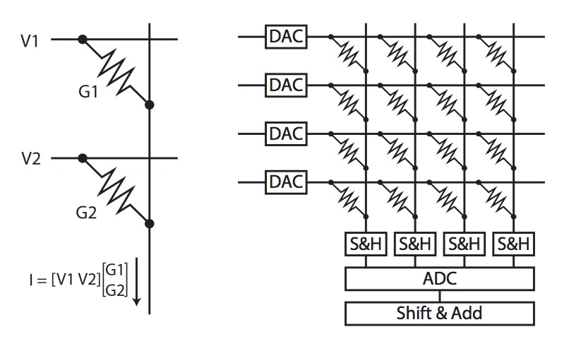
我的理解是输入数据从DRAM读出来，通过DAC转换为模拟信号和保存在电阻中的权重值进行乘法运算，然后结果通过采样保持，ADC和移位加法器输出
作者提出的整体结构图
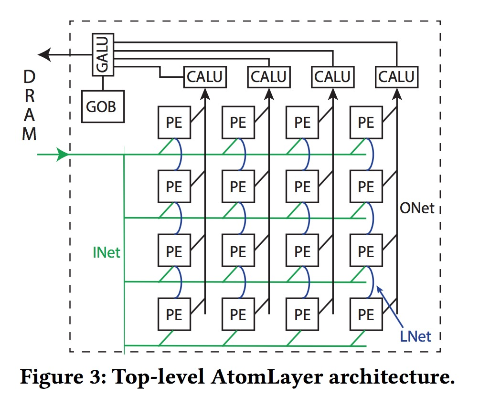
filters的权重数据存在DRAM中，PE用于计算卷积
权重数据被写入PE中，然后与输入数据进行卷积操作，结果先后进过column ALU, global ALU后被写入DRAM
PE的结构图
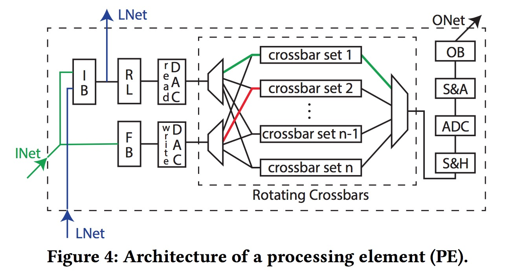
PE包含3个部分
- rotating crossbar
- peripheral devices
- four buffers
计算过程：
- 先加载filters的权重数据到crossbar
- 从DRAM中读出input
- 算出一个卷积层的结果
- 写入DRAM
- 重新到步骤1，计算下一层
PE中的rotating crossbar是关键
作者把多个crossbars组成一个crossbar set，一个周期内，一个crossbar set和读DAC和S&H连接用于计算，一个crossbar set和写DAC连接用于写filter的权重值
crossbar set的数量不能比神经网络的层数少，为了保证不同层的filters写入到不同的crossbar set中
为了优化系统，作者提出了一种row-disjoint filter mapping和数据reuse系统
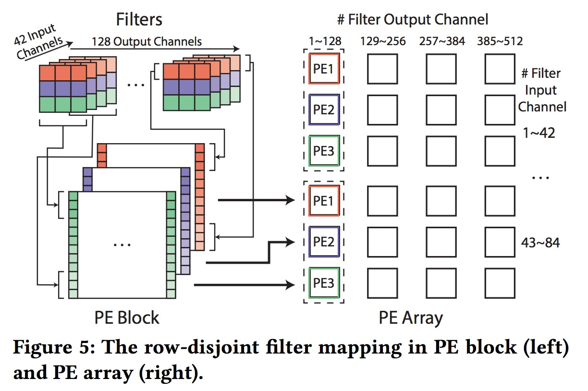
这里假设crossbar大小128x128，filter是3x3，输入feature map 5x5
- 把每42个输入通道128个输出通道的每行（红蓝绿）分别抠出来
- 相同（颜色）的行形成矩阵
- 分别按原来的行的大小放入PE Array中
我不懂为什么要这么做，或者这样做怎么实现数据共享或者利于计算？
为了行内的数据共享，作者提出了一个register ladder结构
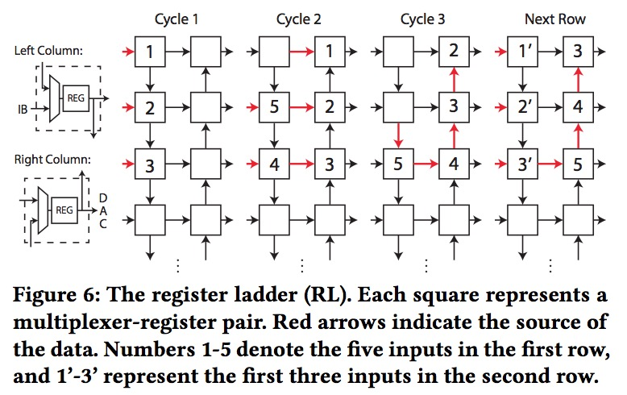
每个register ladder都有buffer模式和FIFO模式两种
在第1，2cycles，2列都是buffer模式，经过这两个周期，5个数据被读入进来。
在第3个cycle，上面的6个寄存器编程FIFO模式，吐出第一个元素，然后后面的元素依次前移
这样数据就可以在行内传递，但如何体现共享？
为了行间的数据共享，作者提出了一个buffer ladder结构
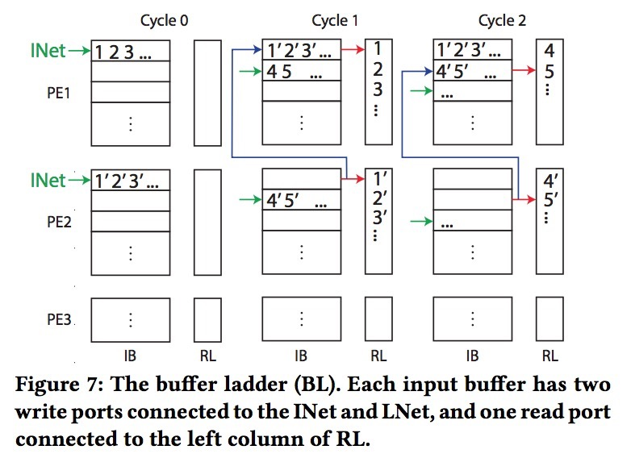
行间是指PE与PE之间？
图中要使数据在PE2中使用后传到PE1中，可以看到在cycle2的时候PE2把数据传到RL的时候，有条线通过(local network)LNet把数据传到PE1了，这样就实现了PE间的数据共享？我不明白这样传数据的意义在哪里？
Evaluation
benchmark
for space exploration and performance
- VGG-19
for inference latency and training efficiecy
- ResNet-152
- DCGGAN
横向对比
- AtomLayer
- ISAAC
- Pipelayer
结果大概是：
inference
在power efficiency improvement
- 比ISAAC 1.1x
- 比Pipelayer 4.7x
对于inference latency，在ResNet-152 benchmark
- 比ISAAC 12x
- 比Pipelayer 5x
training
在power efficiency improvement上
- 比Pipelayer 1.6x
文章三：TRIG: Hardware Accelerator for Inference-Based Applications and Experimental Demonstration Using Carbon Nanotube FETs
使用碳纳米场效应管（CNT）可以大大提高能量效率，但是会带来variations的问题，包括density，diameter等。一个解决variations的方式是共同优化CNT加工和CNTFET电路设计，但这种方法在实验上还没有实现。
作者提出了一种新的方法解决process variations的问题，叫TRIG: Technique for Reducing errors using Iterative Gray code
作者把CNFET用于二进制神经网络中，在二进制神经网络中，权重和激活值是1bit的+1或者-1（那岂不是精度很低？）
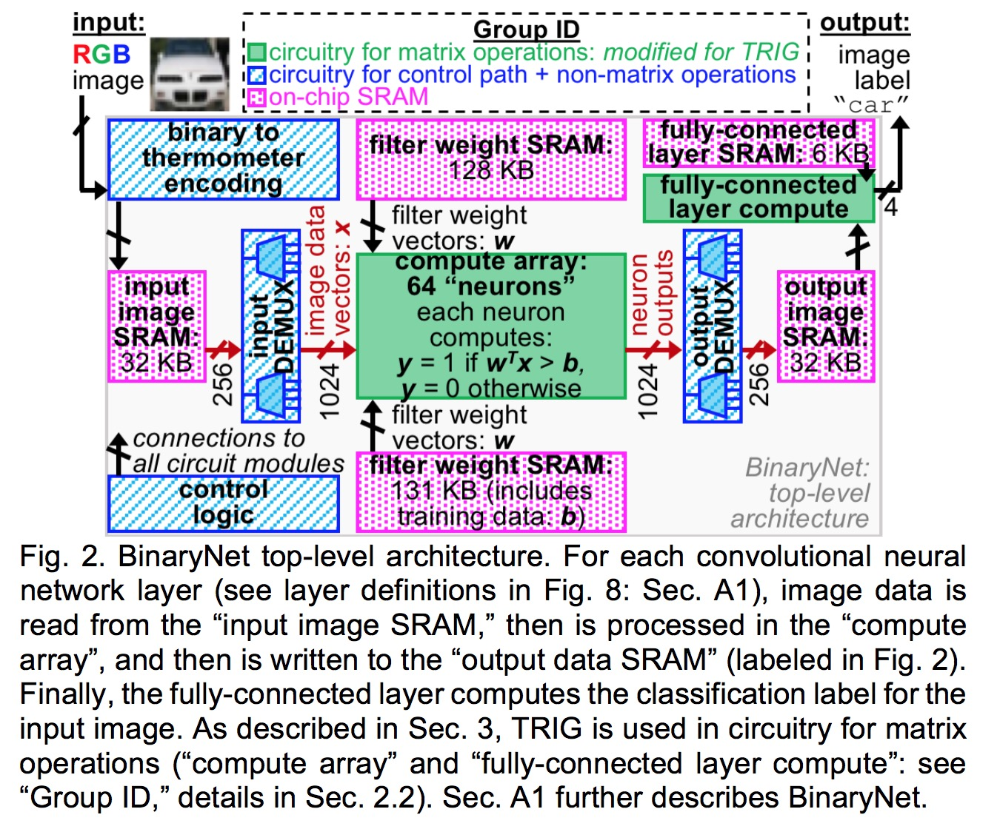
上图展示了二进制神经网络的基本架构，输入数据和权重存在SRAM中，TRIG用于卷积层和全连接层的矩阵计算
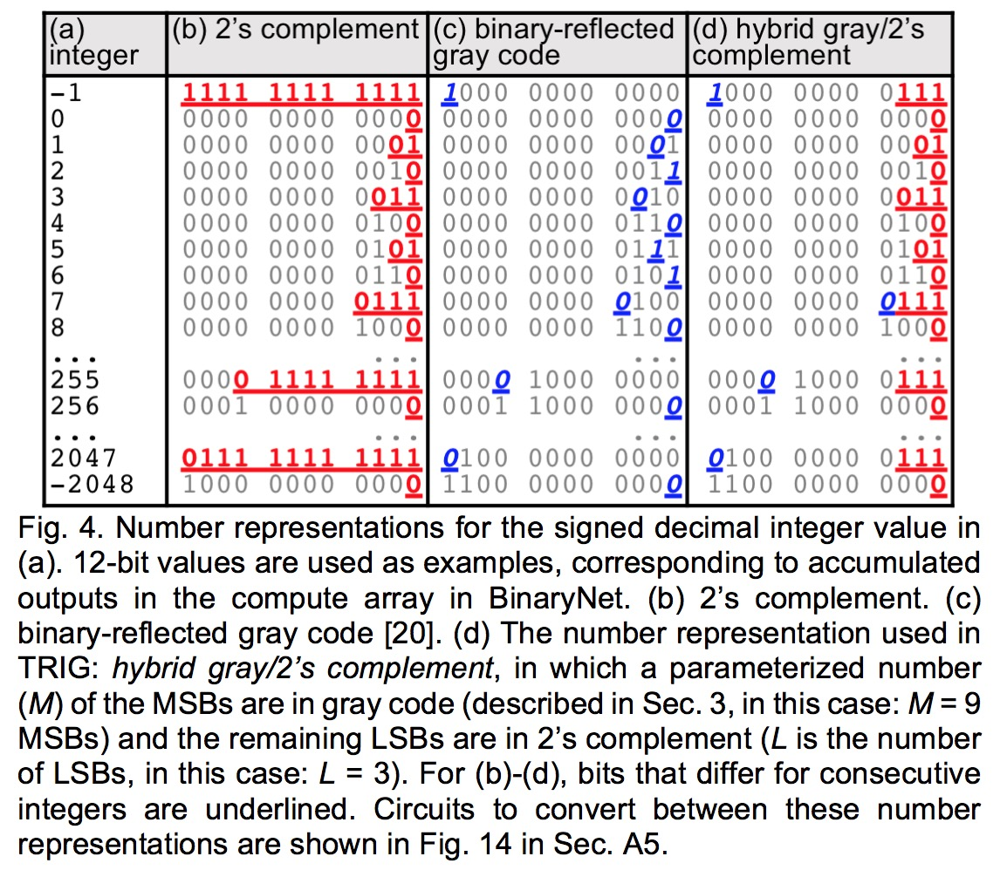
TRIG和non-TRIG最主要的区别是，他使用了一种gray code和2进制code结合的数据表示方法
- 数据的高位用gray code，低位用2进制编码
计算矩阵的电路
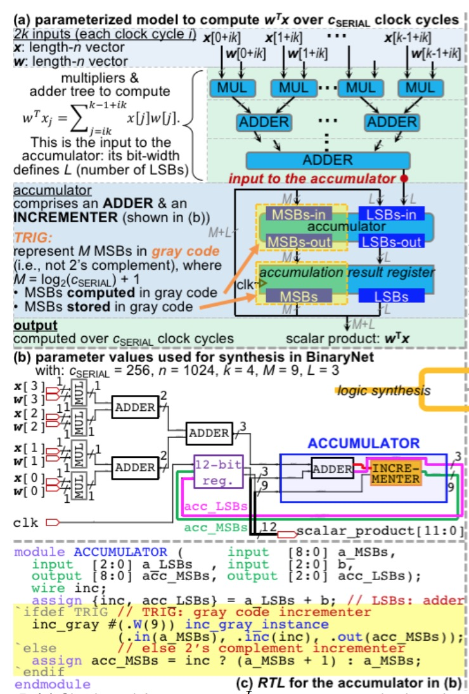
输入X和权重W进行矩阵运算，结果累加后用上面的方式表示，然后作者提出了这种表示方法的实现电路，我还没看明白，也没看懂为什么这个表达方式就可以消除variations
Evaluation
作者评估了乘法计算单元的误差
TRIG vs. non-TRIG，评估的是计算结果的均值和标准差
- 均值：700x
- 标准差：400x
评估了图像分类的精确度
TRIG vs. non-TRIG
- 能耗：0.97x
- 精确度：90% vs. 99%，但TRIG保存了CNFET的优势99% vs. 90%
文章四：Compensated-DNN: Energy Efficient Low-Precision Deep Neural Networks by Compensating Quantization Errors
量化神经网络可以提高资源利用率和节省能耗，但可能带来精度损失问题，一般量化到小于8bit就会出现精度损失问题
传统的方式使用的是一种Fixed Point（FxP）的数据表示方法来量化
8bit的Fixed Point数据表示方法是[Sign,IB,FB]
sign是符号位，IB表示整数位，FB表示小数位
下图介绍了Fixed Point的对3个数的编码，最后结果就是ax2^IB+bx2^(-FB)，a和b分别表示整数位和分数位读出来的数
作者在传统的方法上加了动态补偿位，提出了一种Fixed Point with Error Compensation(FPEC)的量化方法，补偿位是1-2bit
假设有矩阵X和Y，量化后QX和QY，量化误差X1,Y1，那么1
X.Y = QX.QY + X1.QY + Y1.QX + X1.Y1
因为X1.Y1很小，所以可以忽略，有1
X.Y = QX.QY + X1.QY + Y1.QX
使用二进制来近似表示X1,Y1，那么之前的乘法运算可以表示成位移运算1
X.Y = QX.QY + QX >> Y1 + QY >> X1
还可以把很小的量化误差（X1,Y1=0）的计算忽略
FPEC的数据表示格式如下
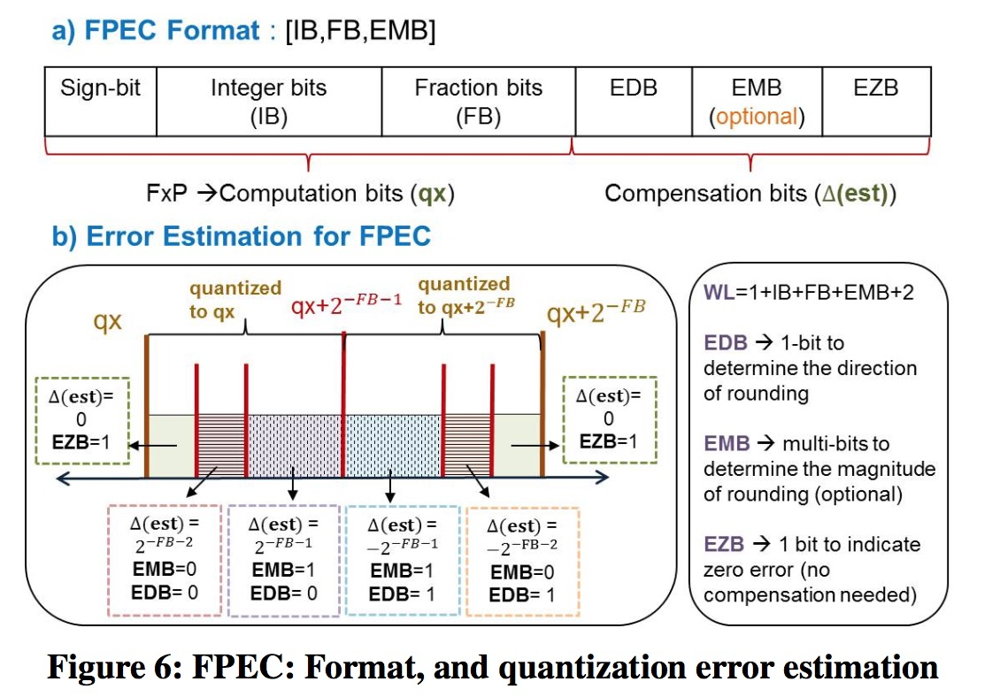
前面和FxP一样，只是增加了Error Direction Bit(EDB),Error Magnitude Bit(EMB),Error Zero Bit(EZB)这3个部分
- EDB用于表示误差的方向，正还是负，决定位移操作的左移还是右移
- EMB用于表示误差的大小，如果EMB只有1位，那么这个误差的分辨率是0.25，可以表示的误差范围是[-0.5,0.5]，需要和EDB一起考虑
- EZB用于表示误差是否为0，如果为0那么就直接忽略
下面的一个例子可以看出使用FPEC是量化的误差从8.5%减少到了0.95%
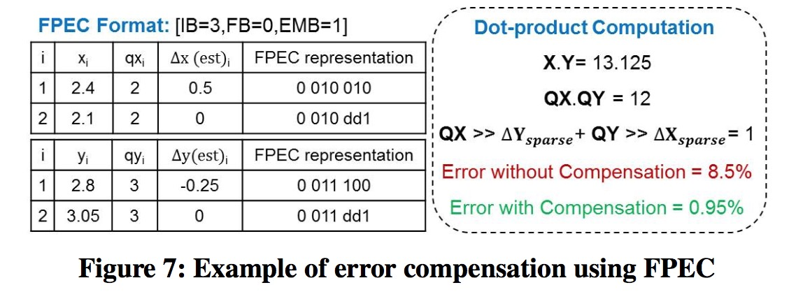
Evaluation
比较FPEC，FxP-16bit，FxP-8bit
enengy improvement
- FPEC vs. FxP-16bit 2.65x-4.88x
- FPEC vs. FxP-8bit 1.13x-1.7x
精度上下0.5%，基本不变
文章五：Parallelizing SRAM Arrays with Customized Bit-Cell for Binary Neural Networks
作者设计了两种结构，6T SRAM for HBNN 和 8T SRAM for XNOR-BNN
作者使用computing-in-memory(CIM)的方式，可以减少计算和内存的消耗
- 在HBNN中，权值表示为+1/-1,激活值表示为0/1
- 在XNOR-BNN中，权值和激活值都表示为+1/-1
6T 和 8T Bit-Cell的设计
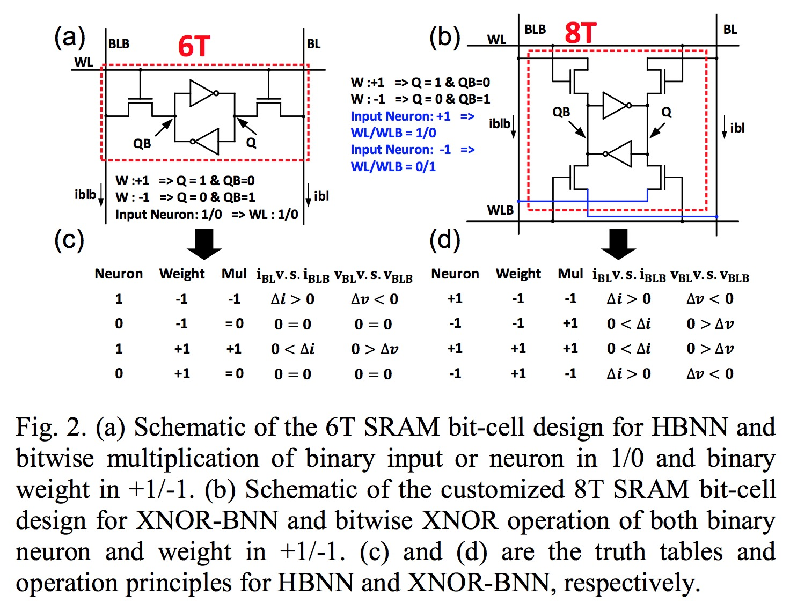
在6T中
- 输入从word line(WL)给入
- 权重的值存储在bit-cell中，通过Q和QB
- BL和BLB的差分为输入和权值的乘积，从BL中读出
在8T中
- 有两个互补的word line(WL)，互补用来表示+1(1,0)和-1(0,1)
- 输出结果也是BL和BLB的差分电压
- 输出结果非0
6T SRAM 和 8T SRAM的CIM结构
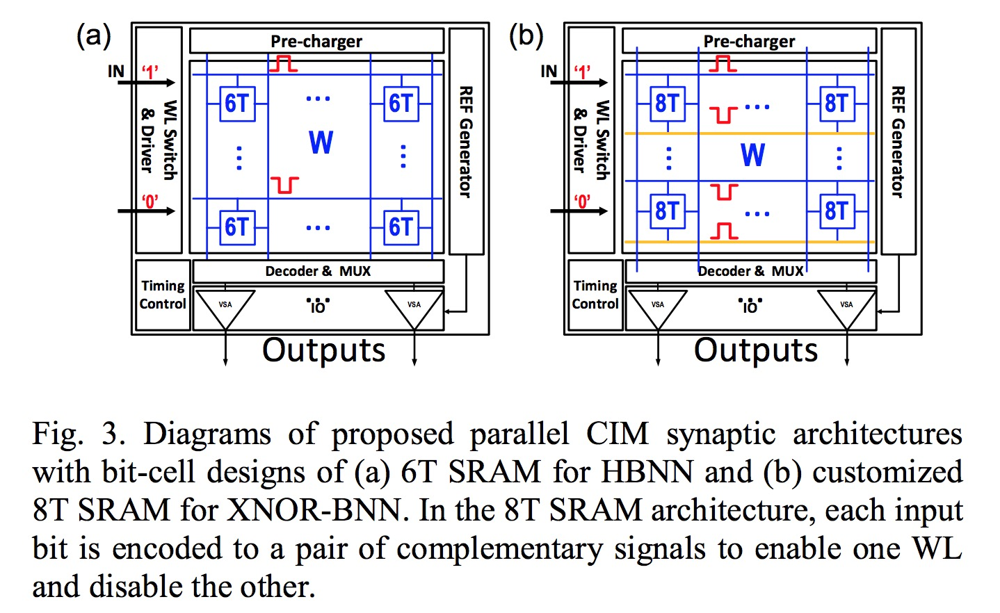
传统的SRAM用于计算权重的累加（为什么），输入数据从WL进入，每次只有一行的数据被激活并进行运算和保存在寄存器中，最后又一个列累加器把所有的行的结果累加
作者提出了并行的SRAM结构，有一个WL开关矩阵用来同时激活多层的WLs，并行的读出
结果：
对VGG-16 on CIFAR-10 dataset, HBNN和XNOR-BNN减少精度损失分别是2.37%，0.88%
相比于传统的row-by-row SRAM结构在空间，延迟和能量效率方面都有提升，对各个神经网络的结果有差异
文章六：DeepN-JPEG: A Deep Neural Network Favorable JPEG-based Image Compression Framework
传统的JPEG压缩方式针对人类视觉系统（Human-Visual System，HVS），人的视觉主要感知低频信号，对高频信号不敏感，所以传统的JPEG压缩方式删除掉这些人类不敏感度的高频信号以达到压缩图像的目的
但是这种压缩方式不适用于DNN，因为DNN可以响应任何重要的频率，所以传统的JPEG压缩方式会产生精度损失
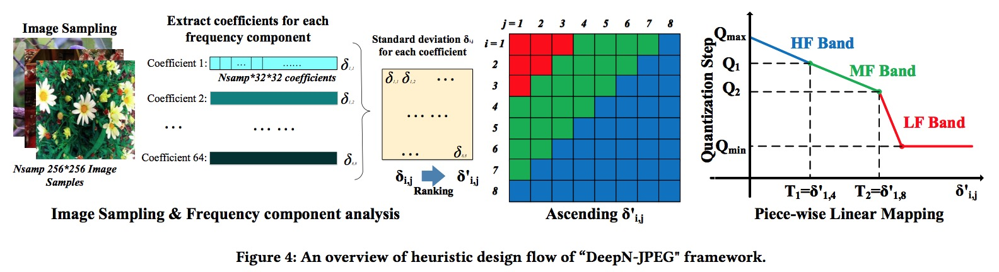
作者提出了一种适用于深度学习的JPEG压缩方式，基本思想是：
抽取全部数据集中的有代表性的特征，对这些特征对应的系数做统计和分级，得到每个频率的标准差，这些标标准差可以反映相应频率的重要程度（why？）。从文章中来看好像是低频信号标准差越大。
把这些标准差按大小放置在上升矩阵中，然后对重要程度不同的频率（频率成分的多少？）做不同程度的量化操作。
标准差越大（低频信号）需要做的量化操作越少，高频信号做的量化操作最多。
Evaluation
在ImageNet数据集上，神经网络为AlexNet，实现了3.5x压缩率，保持相同的精确度
能耗减少是2x到3x相比于RM-HF3和SAME-Q4
文章七：Calibrating Process Variation at System Level with In-Situ Low-Precision Transfer Learning for Analog Neural Network Processors
Process Variation(PV)会带来很多问题，如工作点转移，mismatch，这些会导致神经网络的精度损失
作者提出了In-Situ Low-Precision Transfer Learning方法来减少PV的影响
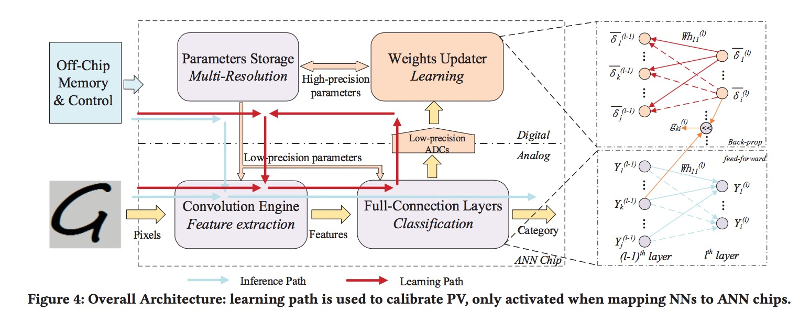
基本思想是，当mapping新的NN算法参数的时候，通过学习错误模式来修正全连接层的参数来消除PV的影响。
权重更新器不必集成在ANN芯片上，可以在外部的CPU或者FPGA上实现，学习好后这个学习通道会关闭，直到需要修改NN结构或者参数
作者使用数据对数化讲乘法运算变成位移运算
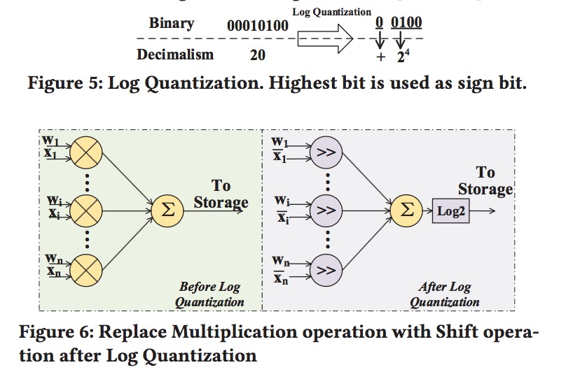
对于权重数据的存储分辨率在不同的阶段有不同，例如在inference阶段，权重只需要8bit就能保证多数算法的精度，但是在训练阶段需要10bit或者18bit来保证收敛。
因此作者采用多分辨率的权重存储方案
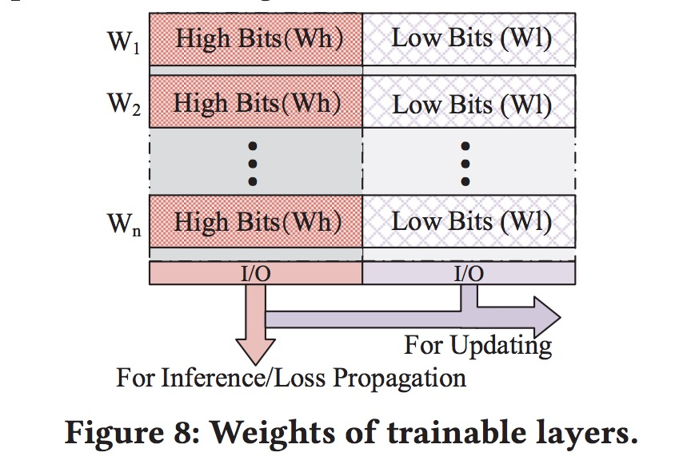
- 卷积层的权重低精度保存，全连接层的权重放在高精度保存
- 训练时，使用全连接层高分辨率确保收敛；未训练时，只使用其高bits做分类工作，这样不会增加芯片的消耗
Evaluation
- 工作点的偏差优化了50%
- 实现更好的共模抑制比，输入偏置可以比以前大2x
- 相比于浮点32位存储，实现了66.7%内存消耗